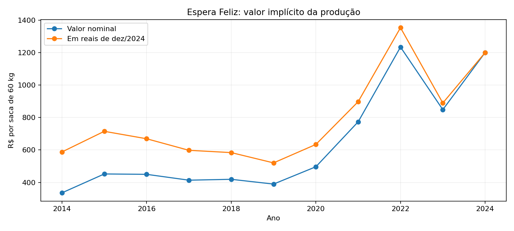

Quanto vale em reais de 2024?
Em Espera Feliz, o valor implícito por saca de 2022 foi R$ 1.233,91 nominais, ou R$ 1.353,27 na base de dezembro de 2024. Em 2024, foi R$ 1.200,00. Os valores vêm da PAM e da correção pelo IPCA; não são preço de venda nem lucro.

IPCA anual IBGE, base dez/2024. O valor anual não tem data exata de venda; a correção é aproximada. Fórmula, fontes, clima, custos e talhões.
O modelo foi testado
Previsão de produtividade para 2022–2024 (12 casos). A regressão Ridge teve erro absoluto médio de 3,73 sc/ha; repetir o ano anterior teve 4,02 sc/ha. No entanto, o Ridge teve erro quadrático maior e superestimou Espera Feliz em 2022. Leia a avaliação e os limites.
Leitura dos dados
Fonte: IBGE, PAM, tabela 1613, café arábica. Localidades em escalas aninhadas: município incluído em MG. Valor médio implícito não equivale à cotação de mercado. Séries anuais não demonstram causas.
Metodologia e conclusões